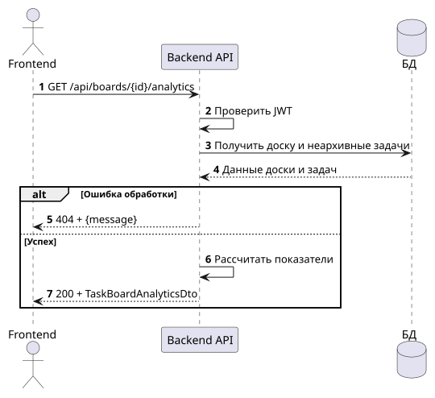

Возвращает сводные показатели доски по неархивным задачам.
Доступ: JWT.
Используется в UC-1. Выбор доски и поиск задач.
Схема работы


@startuml
autonumber
actor "Frontend" as FE
participant "Backend API" as API
database "БД" as DB
FE -> API : GET /api/boards/{id}/analytics
API -> API : Проверить JWT
API -> DB : Получить доску и неархивные задачи
DB --> API : Данные доски и задач
alt Ошибка обработки
API --> FE : 404 + {message}
else Успех
API -> API : Рассчитать показатели
API --> FE : 200 + TaskBoardAnalyticsDto
end
@endumlАлгоритм
Проверить JWT и найти доску по идентификатору.
Получить все неархивные задачи доски независимо от поискового фильтра интерфейса.
Подсчитать общее количество задач, количество завершенных задач, задач со сроком и признаком отображения в календаре (
includeInCalendar=true), а также незавершенных просроченных задач (dueDate < UTC now).Суммировать плановые и фактические часы.
Рассчитать процент выполнения как отношение завершенных задач к общему количеству, умноженное на 100, с округлением до двух знаков. Если задач нет, вернуть
0.Рассчитать отклонение трудозатрат как разницу между фактическими и плановыми часами.
Вернуть объект
TaskBoardAnalyticsDto.
Входные параметры
Параметр пути (PATH). Тело запроса и QUERY-параметры отсутствуют.
Где | Поле | Тип | Обязательно | Описание |
|---|---|---|---|---|
PATH |
| integer | Да | Идентификатор доски |
Ответ
200 OK: возвращает объект TaskBoardAnalyticsDto со сводными показателями доски.
Поле | Тип | Описание |
|---|---|---|
| integer | Идентификатор доски |
| integer | Общее количество неархивных задач |
| integer | Количество завершенных задач |
| integer | Количество задач со сроком выполнения и |
| integer | Количество незавершенных задач с истекшим сроком |
| number | Сумма плановых часов |
| number | Сумма фактических часов |
| number | Процент завершенных задач |
| number | Отклонение фактических часов от плановых |
Расчет показателей
Процент выполнения:
completionPercent = (closedTasks / totalTasks) × 100
Результат округляется до двух знаков после запятой. Если totalTasks = 0, значение completionPercent равно 0.
Отклонение трудозатрат:
effortVarianceHours = actualHours - plannedHours
Положительное значение означает превышение плановых часов, отрицательное означает, что фактические трудозатраты меньше плановых.
Ошибки
Код | Причина | Ответ |
|---|---|---|
404 | Доска не найдена или возникло исключение при обработке запроса |
|
Контроллер возвращает 404 при любом перехваченном исключении, а не только при отсутствии доски.
Пример запроса
GET /api/boards/101/analytics
Пример ответа
{
"boardId": 101,
"totalTasks": 10,
"closedTasks": 6,
"scheduledTasks": 7,
"overdueTasks": 2,
"plannedHours": 80,
"actualHours": 92,
"completionPercent": 60,
"effortVarianceHours": 12
}